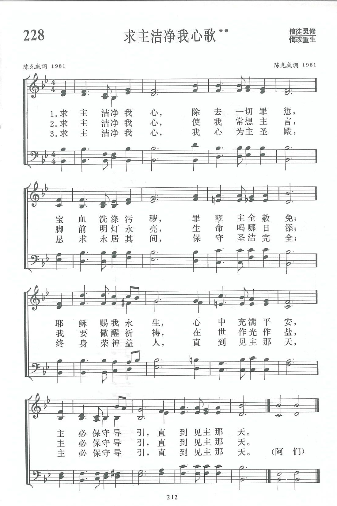

|
|
|
|
|
第228首《求主潔淨我心歌》 |
|
https://www.zanmeishige.com/tab/13901.html?songbook=1&index=228
 |
|
|
|
|

https://youtu.be/GaAYovxDlsg
第228首 求主洁净我心歌** _陈克威 My Lord, O cleanse my heart
经文：“你要保守你心，胜过保守一切，因为一生的果效，是由心发出”(箴4：23)。
这首诗的歌词与曲调都是天津陈克威牧师所写。
陈克威生于l927年，河北省唐山市人。他自幼就信主。他的父亲在他五岁时便被主接去，母亲带着四个孩子艰难地生活，但她常告诉孩子们：“神是眷顾孤儿和寡母的神。”他们每主日都去礼拜，每天临睡前全家在一起祷告，生活中遇到难处时更向神恳求，因此陈克威从小就学习全心依靠神。
1946年，他在北平中学进修班高中毕业，1949年4月献身，同年秋季，进天津圣经神学院学习，两年后毕业，任唐山市林西循道公会传道。1953年至天津东马路循道公会任传道。1958年以后，教会合并，他去工厂，成了一名塑料厂工人。1979年圣诞节前夕，天津教会恢复聚会．他与许多弟兄姊妹一样流着感谢的泪水进入圣殿。在天津原有的传道人中，他是最年青的一位。从那时起，他一面在工厂里当维修钳工，一面在滨江道堂参加教会事工并证道。l984年他从工厂退休，专心事奉，现任天津市基督教教务委员会副总干事。1989年被按立为牧师。
陈克威从小喜欢唱歌，在中学和神学院里学了一点乐理。担任传道以后，他感到经文短歌能帮助信徒背诵经文，因此曾在50年代谱写几首曲子，教信徒唱。有一首还在《圣光》刊物上发表。l981年他在《天风》上看到征集圣诗创作的启事，心情很激动，决心试作应征，并藉祷告将这件事交给神，寻求神的启示和亮光。
陈克威谈到他写这首诗的主导思想时，有这样一段话：“十年浩劫后，教会能重新恢复聚会，实在是全能的神奇妙的作为，是主的厚恩大爱。看到父老弟兄姊妹在主内彼此团契，合而为一，用虔诚的心共同敬拜事奉神的光景；看到爱我们到底的主把得救的人数常常加给教会，我们的心真是满了赞美。回想自己从幼年到现在，从主蒙受了多少恩惠，但自己所表现的却与所蒙的恩极不相称，真是愧对主恩。几十年的岁月一晃虽即逝，深愿在余下的年日里作一个多结果子的枝子，将来见祂时不至惭愧。求主洁我、炼我、用我，保守、引导我，直到见主的那天。”
这首诗的主题来自两处圣经：
“你要保守你心，胜过保守一切，因为一生的果效，是由心发出。”(箴4：23)
“愿赐平安的神亲自使你们全然成圣。又愿你们的灵与魂与身子得蒙保守，在我主耶稣基督降临的时候，完全无可指摘。那召你们的本是信实的，他必成就这事。”(帖前5：23-24)
作者认为：我们的心就是主的圣殿，主向我们所要的是一颗洁净的、虔诚的、为他而活的心。因此在歌词中用了“洁净我心”，“常想主言”，“儆醒祈祷”等词句。要洁净内心，重要的是依靠保守我们的主，因为他是生命的源头、力量的源泉，人若离开主，自己将一无所成。为此，每一节中都反复使用“求主洁净我心”、“主必保守导引”这两句词。洁净內心的人必然伴随着美好的行为表现，这个见证有时比口讲救恩更为有力，使人感动。因此诗中也特别引用了“在世作光作盐”、“终身荣神益人”等句。
这首诗是一首在神面前表达心愿的祈求。曲调平和单纯，能唱出恳求保守导引内心的深情，特别是副歌的主旋律进行，从下行的5 ｜3·21开始，跳高八度 ，全诗结束于高音 ，使人对前面的路程充满信心，等候仰望见主面的那天。